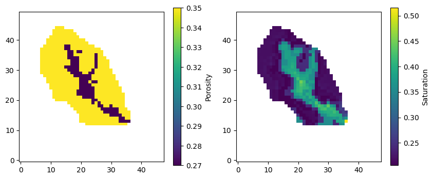
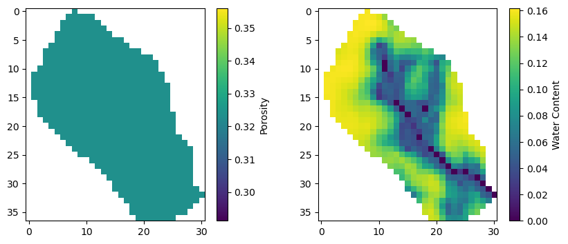

Loading and Processing Hydrological Model Outputs
This example demonstrates how to load and process outputs from different hydrological models using PyHydroGeophysX. We show examples for both ParFlow and MODFLOW models.
The example covers:
Loading ParFlow saturation and porosity data
Loading MODFLOW water content and porosity data
Basic visualization of the loaded data
This is typically the first step in any workflow where you want to convert hydrological model outputs to geophysical data.
[1]:
import os
import sys
import numpy as np
import matplotlib.pyplot as plt
# For Jupyter notebooks, use the current working directory
try:
# For regular Python scripts
current_dir = os.path.dirname(os.path.abspath(__file__))
except NameError:
# For Jupyter notebooks
current_dir = os.getcwd()
# Add the parent directory (OPEN_ERT) to the path
parent_dir = os.path.dirname(os.path.dirname(current_dir))
if parent_dir not in sys.path:
sys.path.append(parent_dir)
from PyHydroGeophysX.model_output.parflow_output import ParflowSaturation, ParflowPorosity
from PyHydroGeophysX.model_output.modflow_output import MODFLOWWaterContent, MODFLOWPorosity
1. Parflow example
Load saturation data
[2]:
saturation_processor = ParflowSaturation(
model_directory="C:/Users/HChen8/Documents/GitHub/PyHydroGeophysX/examples/data/parflow/test2",
run_name="test2"
)
saturation = saturation_processor.load_timestep(200) # Load first timestep
# Load porosity data
porosity_processor = ParflowPorosity(
model_directory="C:/Users/HChen8/Documents/GitHub/PyHydroGeophysX/examples/data/parflow/test2",
run_name="test2"
)
porosity = porosity_processor.load_porosity()
mask = porosity_processor.load_mask()
mask.shape
porosity[mask==0] = np.nan
saturation[mask==0] = np.nan
[3]:
print(saturation.shape)
# Plotting the data
plt.figure(figsize=(10, 4))
plt.subplot(1, 2, 1)
plt.imshow(porosity[19, :, :], cmap='viridis')
plt.colorbar(label='Porosity')
plt.gca().invert_yaxis()
plt.subplot(1, 2, 2)
plt.imshow(saturation[19, :, :], cmap='viridis')
plt.colorbar(label='Saturation')
plt.gca().invert_yaxis()
(20, 50, 48)

2. MODFLOW example
These would be your actual data files
[4]:
data_dir = "C:/Users/HChen8/Documents/GitHub/PyHydroGeophysX/examples/data/"
modflow_dir = os.path.join(data_dir, "modflow")
idomain = np.loadtxt(os.path.join(modflow_dir, "id.txt"))
# Initialize MODFLOW water content processor
water_content_processor = MODFLOWWaterContent(
model_directory=modflow_dir, # Changed from sim_ws
idomain=idomain
)
# Load water content for a specific timestep
timestep = 1
water_content = water_content_processor.load_timestep(timestep)
print(water_content.shape)
# Path to your MODFLOW model directory
model_name = "TLnewtest2sfb2" # Your model name
# 1. Create an instance of the MODFLOWPorosity class
porosity_loader = MODFLOWPorosity(
model_directory=modflow_dir,
model_name=model_name
)
# 2. Load the porosity data
porosity_data = porosity_loader.load_porosity()
(3, 37, 31)
loading simulation...
loading simulation name file...
loading tdis package...
loading model gwf6...
loading package dis...
loading package ic...
loading package npf...
loading package sto...
loading package oc...
loading package drn...
loading package sfr...
loading package uzf...
loading package ghb...
loading package mvr...
loading solution package tlnewtest2sfb2...
Plotting the data
[5]:
porosity_data1 = porosity_data[0, :, :]
porosity_data1[idomain==0] = np.nan
plt.figure(figsize=(10, 4))
plt.subplot(1, 2, 1)
plt.imshow(porosity_data1[ :, :], cmap='viridis')
plt.colorbar(label='Porosity')
plt.subplot(1, 2, 2)
plt.imshow(water_content[0, :, :], cmap='viridis')
plt.colorbar(label='Water Content')
[5]:
<matplotlib.colorbar.Colorbar at 0x24c4e5a0950>
